A concept store for hand-knotted Persian carpets that teaches the buyer how to read a carpet before asking them to buy one.
Role
Design and development
Type
Concept store
Tools
HTML, CSS, JavaScript
Focus
Storytelling, e-commerce, English and Persian script
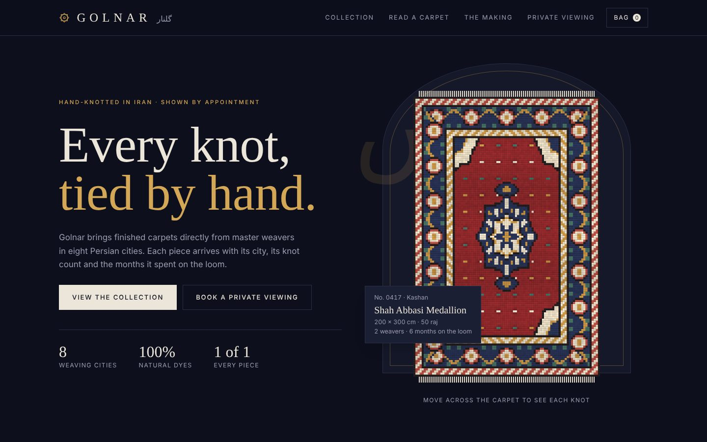
01
The plan
A hand-knotted carpet costs thousands of dollars, and most buyers do not know the words used to describe one: knot count, city, dye, field and border. A normal shop grid would ask for money before earning any trust. Golnar is a concept store built around the opposite order: learn first, then choose, then visit.
Make eight weaving cities the way people browse, because the city tells you the style of a carpet.
Make every piece feel like what it is: one of a kind, with a story, a size and a knot count.
Teach the vocabulary in the page itself, in English and in Persian script.
Replace a risky online checkout with a private viewing in a showroom, at home or on a video call.
1. ShopBrowse by weaving city and size, and add pieces to a bag.
2. LearnRead a carpet, then see how it is made.
3. Feel the craftA knot-density calculator makes “months on the loom” concrete.
4. VisitBook an appointment instead of paying blind.
02
The idea
The page works like a gallery guide. It starts with a single carpet, the headline “Every knot, tied by hand”, and lets the visitor move across the carpet to see each knot. Everything after it follows the same promise: nothing is hidden, and every detail is explained.
Cities as navigation
Kashan, Tabriz, Isfahan, Nain, Qom, Heriz, Kerman and Bijar, each with its Persian name, filter the collection.
One of one
Every carpet shows its number, city, size, raj and knots per square metre. When a piece is reserved, it leaves the collection.
Read a carpet
An interactive diagram names the parts, from the central medallion (toranj) to the fringe (rishe), in English and Persian script.
From fleece to floor
Five stages, from spinning to clipping, plus a “dye garden” of five natural dyes: madder, indigo, pomegranate rind, weld and walnut husk.
What a raj means
Sliders for raj, size and number of weavers calculate knots per square inch, total knots and months on the loom, and redraw the knots.
A bag that leads to a viewing
The bag reserves pieces and promises white-glove delivery in Canada, and the visit form books a showing in Toronto.
03
Design
The layout is quiet on purpose, so the carpets provide the colour: cream and navy surfaces, a serif headline, and small gold labels. Drag the handle to compare the first wireframe with the finished page.
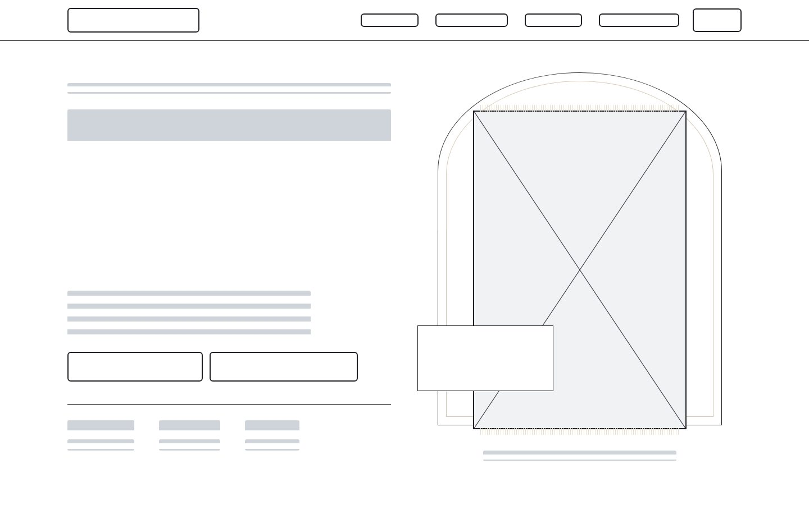
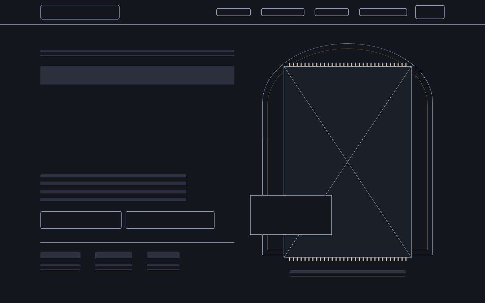
WireframeFinal design
Drag the handle, or use the arrow keys.
The collection
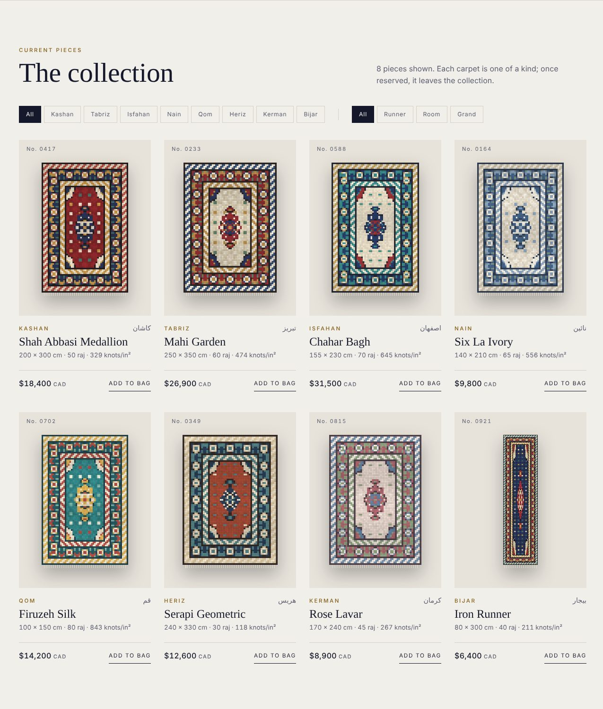
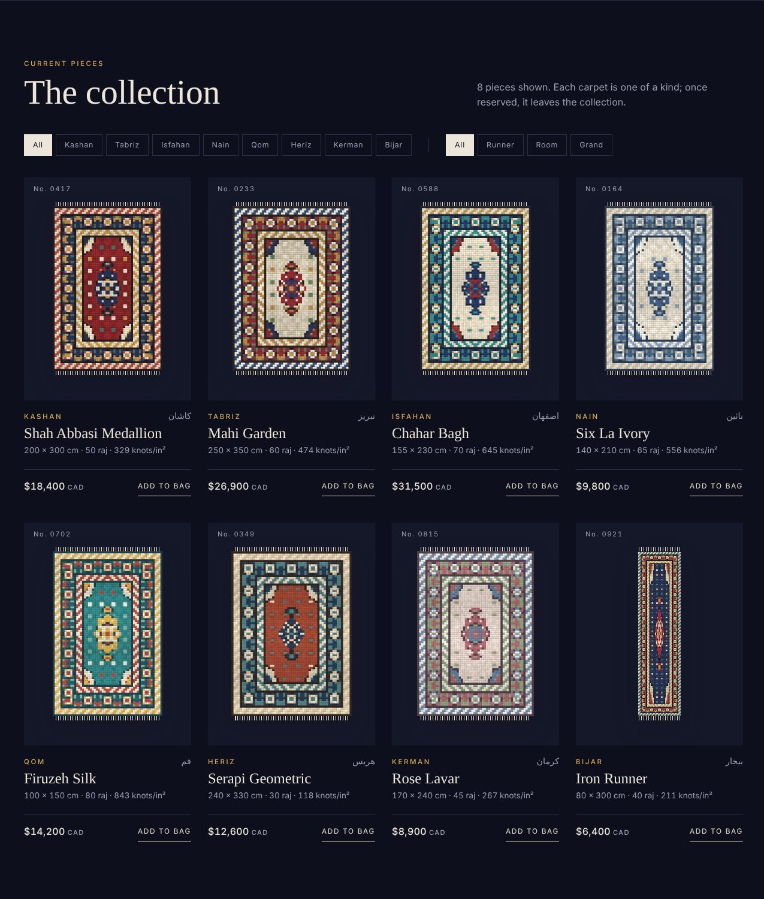
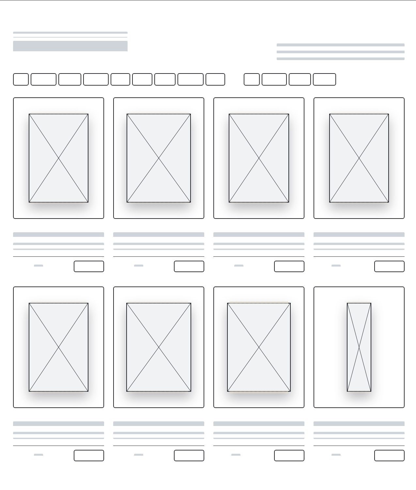
WireframeFinal design
Drag the handle, or use the arrow keys.
Each part of the page
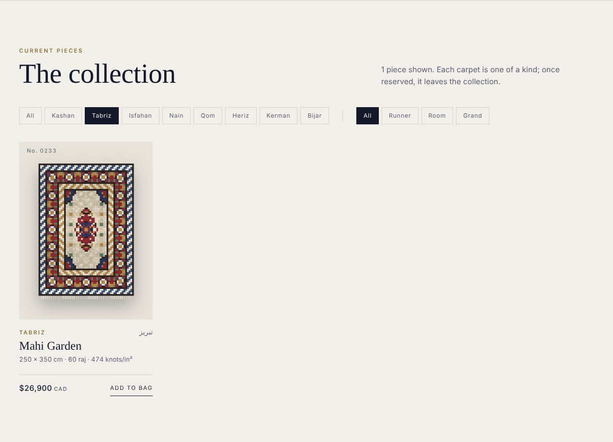
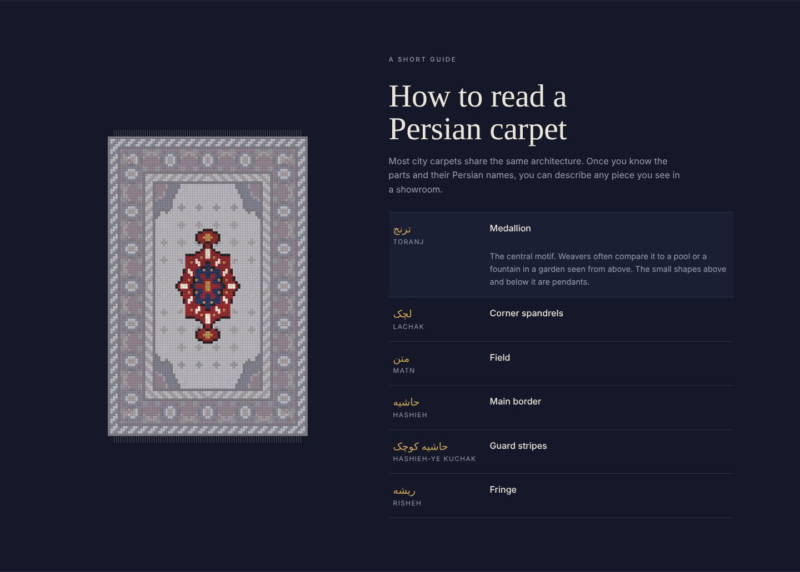
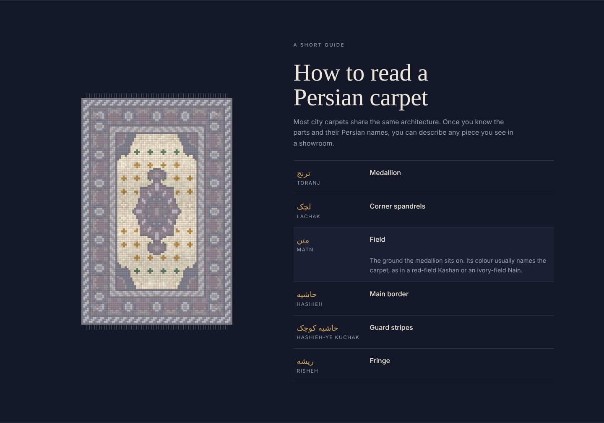
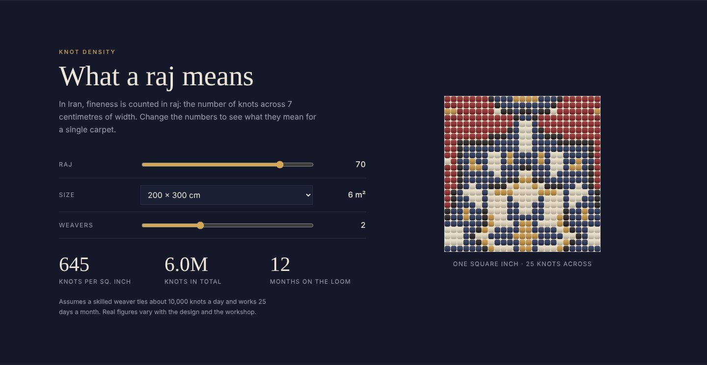
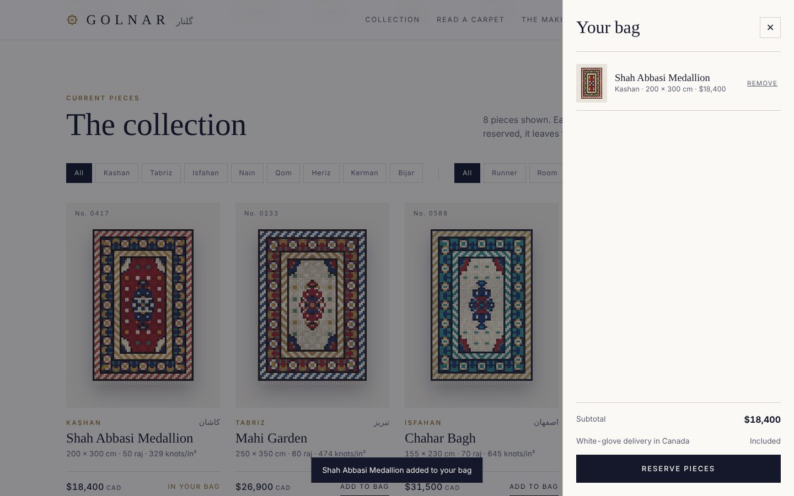
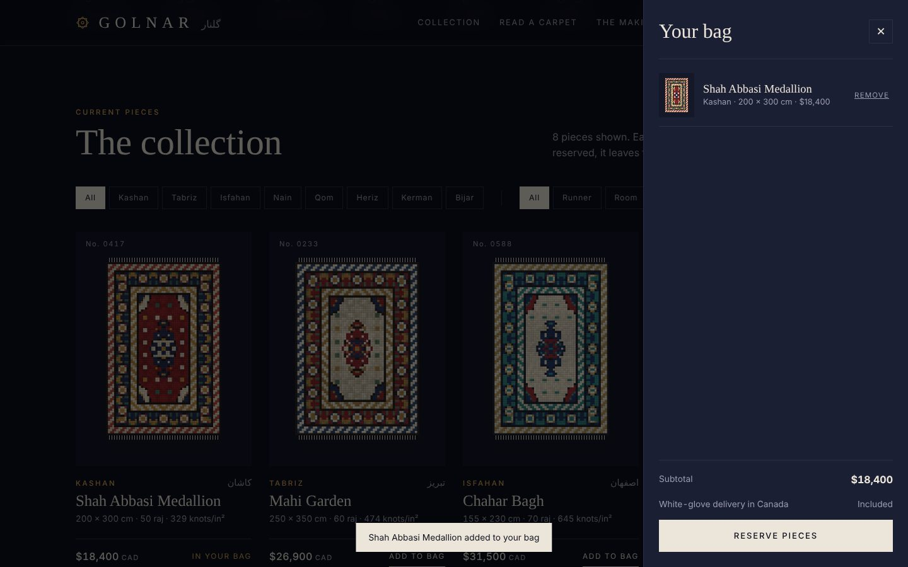
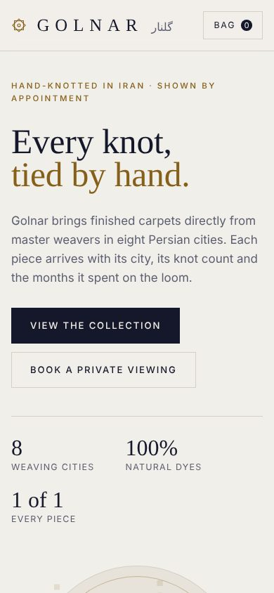
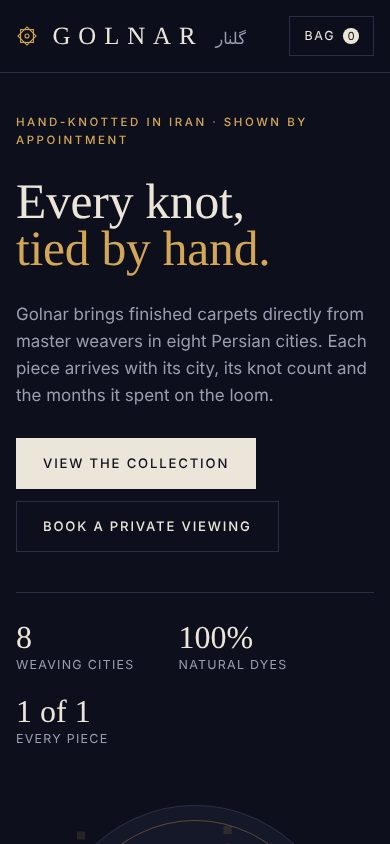
04
The prototype
The prototype is a working page. Filter the collection by city and size, add a piece to the bag, click through the parts of a carpet, and move the raj slider to watch the knots, the knot count and the months on the loom change.
Golnar is a finished, single-page concept store. It shows that an expensive, traditional product can be sold with patience: explain it well, make it tangible, and then invite the buyer in.
8Carpets, one from each weaving city
6Named parts in the carpet guide
5Making stages
5Natural dyes explained
Turning “knot density” into sliders makes an abstract number feel like time and labour.
Showing Persian script next to English respects the craft and helps visitors learn the real words.
Next: add real photography, a checkout for deposits, and a Persian-language version of the page.